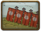

Screens
Screens are large wooden shields that, if you are the defender, are erected during the deployment phase and used to protect archers in between volleys. They cannot be traversed by units and will stop any missiles fired directly at them - although arrows will tend to arch over the top of them due to their angle of fire. It is not possible to string screens together into a continuous wall.